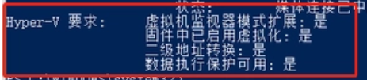
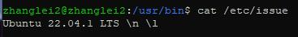
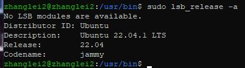
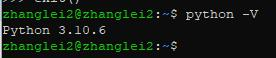

Ubunto22.04.1操作
目录
一、Windows下安装Ubuntu
1、检查下我们电脑是否支持虚拟化功能，在系统右下角任务栏的“微软图标”中右键，选择“Windows PowerShell（管理员）（A）”；
2、在弹出来的窗口中输入“systeminfo”，然后回车，在弹出来的信息中找到“Hyper-V要求”，要求中显示的所有项后面都是“是”则表示支持Hyper-V功能。
（1）如果“虚拟机监视器模式扩展”后是否，需要在“Windows设置”中找到“启用或关闭Windows功能”，然后将“Windows虚拟机监控程序平台”和“适用于Linux的Windows子系统”都勾选上。
（2）如果“固件中已启用虚拟化”后是否，则是因为在BIOS设置里CPU的虚拟化功能默认是关闭状态，则需要：进入到BIOS管理界面，在管理界面中找到“Advanced”-->“CPU Configuration”菜单，点击进去后，如果是Intel CPU则找到“Intel Virtual Technology”，然后设置为“Enable”状态；如果是AMD CPU则找到“SVM Support”，然后设置为“Enable”状态。之后保存并重启电脑。
（3）二级地址转换（SLAT）是一种硬件机制，也称为嵌套分页，是一种硬件辅助虚拟化技术，可以避免与软件管理的影子页表相关的开销。和CPU的型号相关。
（4）数据执行保护 (DEP) 可以理解为CPU自带的防火墙，有助于防止电脑遭受病毒和其他安全威胁的侵害。
3、在windows应用商店中搜索Ubuntu，然后点击获取，下载，安装，即可。
二、常用命令
2.1 查看ubuntu版本号
方法一：命令：cat /etc/issue
方法二：命令：sudo lsb_release -a
2.2 设置root密码
Ubuntu刚安装后，不能在terminal中运行su命令，因为root没有默认密码，需要手动设定。即以安装ubuntu时输入的用户名登陆，该用户在admin组中，有权限给root设定密码。
输入命令:sudo passwd [root]
回车后会出现让你输入原始密码，新密码和确认密码，
注：root可以省略，命令为passwd而不是password，我犯过这个错误。
[sudo] password for you ：---> 输入你的密码（你现在这个用户的密码），不回显
Enter new UNIX password: --- > 设置root 密码
Retype new UNIX password: --> 重复这样
这样你的root的密码设置好了，可以在terminal中利用su命令就可以切换到root用户。
注：su和sudo的区别是：1). ，而sudo的密码是用户的密码；
（1）su直接将身份变成root，su的密码是root的密码，以root的身份运行命令，不需要知道root密码。
（2）而sudo是以用户登录，sudo的密码是用户的密码，权限没有root权限高，有些命令执行不了。
2.3 安装Python
命令：sudo apt-get install python3.10
如果安装不了，可以试试命令：sudo apt-get install python3-pip
检验是否安装成功，使用命令：python -V
如果python命令没有，检验是否安装成功，可以试试命令：python3 -V
如果输入python命令不行，输入python3才行，需要将python和python3命令链接起来，使用命令：ln -s /usr/bin/python3 /usr/bin/python
另：一些说明
1、本博客仅用于记录学习和交流，欢迎大家瞧瞧看看，也感谢相关作者提供的内容。
2、如果原作者认为侵权，请及时联系我，我的qq是244509154，邮箱是244509154@qq.com，手机18435164116，我会及时删除侵权文章。
3、我的文章大家如果觉得对您有帮助或者您喜欢，请您在转载的时候请注明来源，不管是我的还是其他原作者，我希望这些有用的文章的作者能被大家记住。
4、最后希望大家多多的交流，提高自己，从而对社会和自己创造更大的价值。